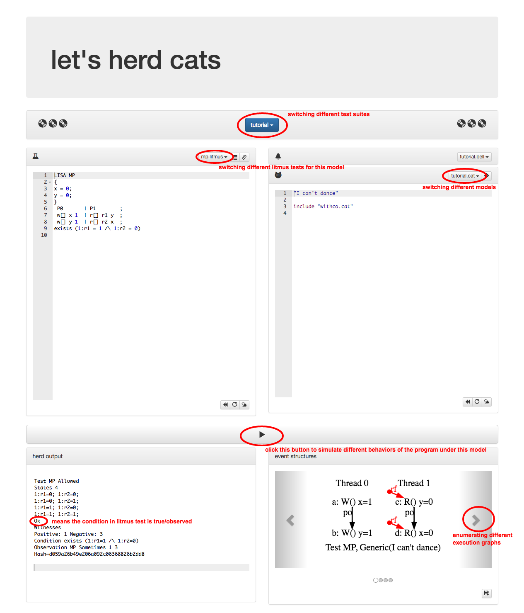
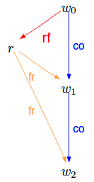
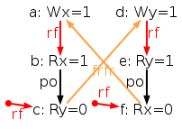
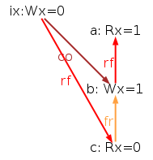

This is the Lab preparation for explaining relaxed memory models using herd7 simulator.
The outline for this lab is:
- Set up the environment;
- Get familiar with litmus tests / memory model definitions and the herd7 tool website.
- Define the TSO model step by step.
- Explore some more interesting litmus tests that could exhibit different behaviors among multiple models.
Environment set-up
In this lab, we will be experiencing memory models using herd7 – a memory model simulator.
Use website version
herd7 is accessible via this website: http://virginia.cs.ucl.ac.uk/herd/#, which entirely frees users from installing the library and remembering the command line to execute + generate graphs. It is recommended to try common litmus tests with this setting.
Install local herd7 tool
The website version is preferrable. But if the online version is not accessible (e.g. due to suddenly large amount of traffic) or more customization is necessary, we could install herd7 on our own machines, and do the experiments offline.
Steps:
To see the specific execution graph generated, run commands using options with -evince (which requires having installed evince), such as:
1 | herd7 -model tso_attempt2.cat -show prop -evince sb.litmus |
For those who got problems generating and displaying execution graphs directly, one alternative is to do in two steps:
Generate the dot file by commands of this shape:
herd7 -model tso.cat -show prop -o ./output SB.litmusthen it will generate a
SB.dotfile under./outputdirectory.Then generate the image from this dot file using
dot -Tpng ./output/SB.dot -o SB.png
Warm up
The herd7 tool website is easy to use:

- The blue “tutorial” button is to switch different testing suites.
- In each test suite there could be multiple models (.cat) and multiple litmus tests (.litmus).
- On the left panel is litmus test.
- On the right panel is the memory model definition.
- To execute the litmus test program against the specified model, click the “Play” button.
- The results will be shown at the bottom.
- The left panel is the terminal output. If there is
OKin the output, the behavior specified by litmus test condition is observed. - The right panel lists all corresponding execution graphs. Memory events are inter-connected by relations. The
· --rf--> ...relation means it is reading from initial writes.
- The left panel is the terminal output. If there is
Litmus tests
The litmus test program is written in herd7’s DSL. Take the Message Passing program for example (src),
1 | LISA MP |
It can be further divided into 4 sections:
Line 1 –
LISA MP:LISAspecifies what architecture this program is supposed to run against.LISAis their DSL for describing litmus test programs. There are also other options such asPPC(Power),ARM,AArch64,X86,C,CPP. All these hardware or language “architectures” are used for determining how to parse the test program.MPis the name for this litmus test, it is the abbreviation for “Message Passing”.
Line 2~5 –
{ x= 0; y = 0; }specify the initial state.Line 6~8 are the actual program code.
Here it specifies two threads P0 and P1. P0 writes 1 to x and then writes 1 to y, while P1 reads from y and then reads from x. Variable y serves as a flag bit to show whether variable x is ready.
The empty [] is the syntax in LISA. It represents some tags attached to the instruction. This could be used to express
rel/acqatomic actions in C++11, for example. In this test program, [] is not used.
Line 9 –
exists (1:r1 = 1 /\ 1:r2 = 0)is the litmus test condition to validate (or invalidate). Here it asserts that the read of y in P1 returning 1 and read of x in P1 returning 0 should be possible.
PS: More details of their LISA DSL can be found in their paper Syntax and analytic semantics of LISA.
Memory model definition
In the default test suite, “tutorial.cat” model is selected.
1 | "I can't dance" |
The first line "I can't dance" is the name for this model. "" is just used to include spaces as well.
Here it only includes “withco.cat” in the code. Relation co will be defined and displayed if it exists.
co is short for coherence. It is also called ws (write-serialization) or mo (modification-order) sometimes. co serializes all writes to one same location. The definition / computation of co is not shown here, those who are interested might check it out here.
Quiz: In the current MP litmus test, there is no co relation. How would you modify the litmus test program to make co displayed on generated execution graphs?
Answer: There is no co relation in MP litmus test, because there are no two writes to the same location. For example, one modification could be adding a 3rd thread also writing to x / y, Then there will be co in the graphs (src):
1 | LISA MP |
In herd7, the memory models to run against are specified in “.cat” format.
Quiz: So regarding this “tutorial.cat” model, do you think it is a strong model or a weak model? You may run through the 14 associated litmus tests to be confident on that hypothesis.
Answer: Now that it only defines the relation but not checking anything, this is the weakest model, in the sense that all 14 litmus test queries are observed due to no constraints. Of course, exists (false) still won’t satisfy.
So, what if we want to avoid the non-MP behavior? How shall we define the model accordingly?
To do that, let’s first define relation fr (from-read). fr is also named read-before sometimes in some other works. The intuition behind fr is shown below:

This image is clipped from paper Herding Cats: Modelling, Simulation, Testing, and Data Mining for Weak Memory by authors of herd7. The basic idea is that: if a read event R reads value from a write event W0 that is before another write event W1 via co, then R fr W1.
The computation of fr is omitted here. We could include cos.cat (src code) to include the computation for both fr and co:
1 | "I can't dance" |
Now run the MP litmus test again against the refined model, relation fr will appear in the generated execution graphs. Below is the execution graph that demonstrates { r1 = 1 ∧ r2 = 0 } non-MP behavior:

Quiz: How could we modify the model to avoid this execution, and potentially also avoids similar behaviors in the future? Hint: cycles are usually suspicious in memory model specifications.
Answer: We can see a po · rf · po · fr cycle in the graph. If we forbid such cycle, this execution will be eliminated.
To do so, the model may be written as:
1 | "I can't dance" |
Here | operator means union of two relations. Run the MP litmus test against this new model, you will see that this erroneous execution graph is gone. There are only 3 possible executions and no non-MP behavior is observed.
The modification we just made turns it into a stronger model. In fact, Sequential Consistency, one of the strongest memory model, can be defined in a similar way: (src)
1 | SC |
Forget about the fences for the moment, SC requires in line 10 that po (program-order, also called sequenced-before in some other works), fr (from-read), rf (read-from), and co (coherence) unioned together should be acyclic.
Quiz: Copy the definition for SC into the right panel on website, and try it with other litmus tests. Which litmus tests can still exhibit weak behaviors?
Answer: You’ll find that SC is very restrictive, no weak behaviors in these litmus tests are still observable under SC.
SC is intuitive to programmers, but as we will see shortly, more relaxed models are actually used in practice.
PS: More details of their cat DSL can be found in their paper Syntax and semantics of the weak consistency model specification language cat.
Total Store Ordering (TSO)
Next let’s go through the process of building the model for TSO step by step following that in herd7’s official documentation.
TSO is chosen because it is interesting enough as well as simple enough. TSO is the model underlying x86 architecture. Other model definitions such as Power / ARM / C++11 are also accessible in the website (see corresponding test suites), but they are much more complicated.
Attempt 1
Consider the following canonical example for TSO – Store Buffering litmus test (sb.litmus in the list of tutorial test suite) (src):
1 | LISA SB |
SB litmus test says that:
- Initially, x and y are both 0.
- In both thread, it first writes 1 to a variable, and reads the value of another variable.
- Query asks if it is possible to see that the two reads both see the initial value 0.
Run this litmus against the SC model we defined just now, it shows that the case in litmus query is not observable. However, this is actually observable in real x86 machines! Which means, SC model is too strong, at least for those x86 machines.
In an operational perspective, TSO works by maintaining a write buffer for each thread.
- Each thread’s Write will go into that buffer. Buffers get flushed to global memory non-deterministically.
- When reading, each thread will first try to find the latest value in its buffer. Only when there is no such pending write in the buffer will it read from global memory.
In other words, TSO allows Write-Read reordering (to different variables of course). Because in a global view, the Write does not happen until it flushes into memory. On the other hand, the thread may “read its own write early”, earlier than other threads see that.
Following that in official document, let’s write a first version of the TSO model (src):
1 | "A first attempt for TSO" |
The key change in this temporary model is po-tso, which preserves those W-W, R-W, R-R pairs except W-R pairs, since TSO allow W-R reordering. Now po-tso is used instead of po to check acyclicity.
Quiz: Do you think this would change the behavior of SB litmus?
Answer: Turns out YES! The SB weak behavior is no more observable.
Attempt 2
But this is not enough. There are some more test cases (src) that are forbidden by the model but indeed observable in real machines.
1 | X86 SB+rfi-pos |
Initial values are 0 by default.
The rejected should-accept execution is shown below:

Apparently, the rf · po · fr · rf · po · fr relation cycle is recognized as ghb cycle and thus rejected.
Quiz: How would you propose to eliminate this false negative case while still being general enough?
Answer: The basic idea is to eliminate the specific relations among the cycle components. For example, it would suffice to exclude this kind of Wx=1 --rf--> Rx=1 and Wy=1 --rf--> Ry=1 relations.
Therefore, we may define rfi (internal) and rfe (external) relation to specify reads from the same thread or from other threads. Then only consider rfe in the acyclicity check. (src)
1 | "A second attempt for TSO" |
Notice the com-tso and rfe change in the model. rfe is assumed to be given just like rf. Run the litmus test against this new model, that real world weak behavior is now allowed.
Attempt 3
Again, the model is not completed, because the current model haven’t dealt with fences, at all. Consider the following SB litmus test augmented with MFENCEs (src):
1 | X86 SB+mfences |
Fence instructions are provided by hardware to restore orderings. According to x86 manual:
MFENCE guarantees that every load and store instruction that precedes in program order the MFENCE instruction is globally visible before any load or store instruction that follows the MFENCE instruction is globally visible.
Then the weak behavior of this litmus is not supposed to happen with MFENCEs inserted. But the current model definition even do not recognize and display MFENCE on the execution graph.
Here is how MFENCE could be defined:
1 | let mem-to-mfence = po & M * MFENCE |
In this definition, MFENCE is not exactly an event in the execution, but is used to contribute as a part of po relation. Replace original po-tso relation with the definition above, the SB+mfences litmus test is now correctly handled. (src)
Attempt 4
There is one last conflicting litmus test to consider (src):
1 | X86 CoRWR |
This CoRWR litmus test cares about single thread correctness. The query asks if it’s possible to first read the future writes, and read initial writes later on. This is not rejected by current model via the acyclic check as following diagram do not have a cycle:

However, this is not replay-able in website herd7. This weak behavior of this litmus test never shows up. This is due to the extra “uniproc” check executed by herd7 tool, which eliminates such sequential weird behaviors. And the website version of herd7 does not allow changing this setting.
To show this, we need to use offline version of herd7. Running commands
1 | herd7 -model minimal CoRWR.litmus |
will have different results. The minimal model will allow the weak behavior with output similar to:
1 | Test CoRWR Allowed |
while the “uniproc” model puts additional check to eliminate such weak behavior.
For TSO, these “uniproc” check could be (somehow) specialized to
1 | irreflexive po-loc & (R*W); rfi as uniprocRW |
Adding this to the current model will produce a correct model for TSO (src):
1 | "A final attempt for TSO" |
To further check this, you could write (or find) the litmus tests in Intel Memory Ordering White Paper and run them against the defined model.
PS: Running the given litmus tests in Tutorial Suite against our freshly defined TSO model may not produce outputs. This is likely due to some internal conflicts between MFENCE and LISA definitions. For these non-MFENCE litmus tests, comment out the mfence related part would make it runnable again.
Some more interesting litmus tests
Now we should more or less have some basic understandings of TSO. Other models presented in the webiste are generally (much) more complex than TSO. PowerPC and ARM model formulations can be found in Herding Cats test suite, while C++11 model formulation can be found in C11 test suite (there are many variants inside that suite).
Instead of delving into details of those models, let’s look at some more litmus tests that can exhibit differences among those models.
IRIW
IRIW is short for Independent Reads of Independent Writes. It is a very well-known litmus test, usually used to check if some specific model satisfies write atomicity or not.
There is IRIW litmus test just in tutorial test suite (src):
1 | LISA IRIW |
It basically says there are 4 threads: 2 of them writing to x and writing to y, respectively. The 3rd thread read x first and then read y, while the 4th thread read y first and then read x. The query of IRIW litmus test asks if it is possible for two reader threads to observe the 2 writes in different order?
Quiz: What result of this litmus test on TSO would you predict? What about PowerPC and ARM machines? Hint: “kittens.cat” in Tutorial testing suite is “almost-TSO”, without the fences stuff. The model for Power and ARM could be found in Herding Cats suite. There are runnable IRIW tests for each model. Remember that IRIW test for Power and for ARM are different in syntax, it is important to select the correct pair when running (there are two versions of IRIW.litmus in the list).
Answer: IRIW weak behavior is not observable under TSO, but is observable under both Power and ARM.
2+2W
In addition to IRIW, 2+2W is also an important litmus test. According to paper Formal Reasoning about the C11 Weak Memory Model, 2+2W is one of the smallest known examples to distinguish release-acquire from TSO model (src).
1 | LISA 2+2w |
For TSO, the litmus test could be found in Tutorial test suite, and executed against kittens.cat (almost TSO) model.
Quiz: What result would you predict for TSO?
Answer: Weak behavior not observable.
C11/C++11 model has a Release / Acquire fragment. Detailed explanations on the release / acquire / relaxed memory order atomic keywords could be found in the official documentation.
However, the C11 test suite and Demo test suite’s c11.cat model on the tool website somehow do not produce outputs.. You could run on local herd7 to check the results for following two experiments.
Quiz: For the following litmus test (src), what do you think the result would be?
1 | C 2+2w |
You could run this program against C++11 model by command like:
1 | herd7 -model c11_orig.cat 2+2w_relaxed.litmus |
“c11_orig.cat” model comes with herd7 tool. You could check out the official code and its dependencies to see how delicate (or complex) C++11 model is defined..
Answer: Weak behavior observable.
Quiz: Then what about the slightly modified version litmus (src) (replace “relaxed” with “release”)?
1 | C 2+2w |
Answer: Weak behavior also observable.
□